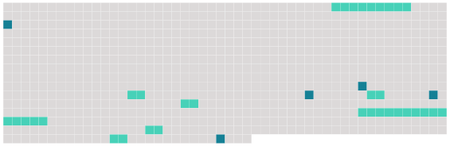

Longueur nb maillons : 12 mentions |
 |
Paragraphe 2 : Habilitation des militaires de la gendarmerie et des fonctionnaires de la police nationale, ayant la qualité d'officier de police judiciaire, à exercer effectivement les attributions attachées à cette qualité
Article R14 [4 phrases]
Article R15
Article R15-1
L'arrêté d' [habilitation] indique les fonctions en vue desquelles [cette habilitation] est accordée et précise qu' [elle] vaut seulement pour le temps pendant lequel l'officier de police judiciaire exercera lesdites fonctions.
Lorsqu'il envisage de refuser [l'habilitation] , le procureur général en informe l'intéressé, en lui précisant qu'il peut, dans un délai de quinze jours, prendre connaissance de son dossier et être entendu, le cas échéant, avec l'assistance d'un conseil de son choix.
Article R15-2 [1 phrases] L'officier de police judiciaire dont [l'habilitation] a été suspendue reprend de plein droit, à l'expiration de la suspension, l'exercice des attributions attachées à sa qualité. [1 phrases]
Après un retrait, [l'habilitation] ne peut être rendue que dans les formes prévues par [son] attribution initiale. |
 |
Il est possible de télécharger la ressource sur la page Ortolang |
Si vous avez des questions ou vous voyez des erreurs, merci d'envoyer un mail à silvia.federzoni89@gmail.com |